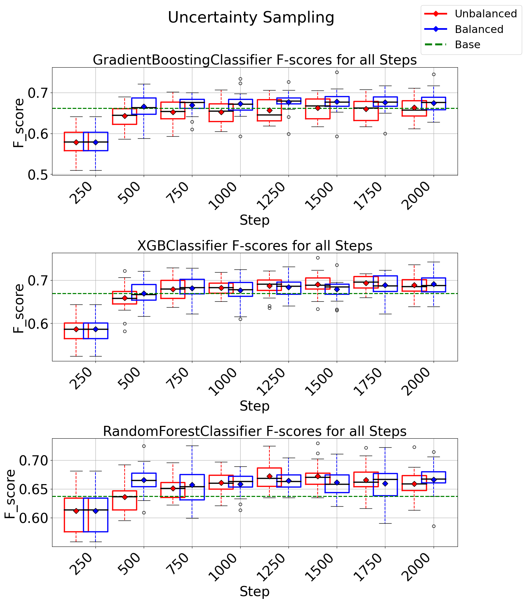

Project 3: Instrumar's Pipeline for Manufacturing Fault Classification
(Python, Scikit-learn, Pandas)
Description
Developed Instrumar’s Active Learning Pipeline for fault classification in industrial manufacturing processes, automating the identification and classification of faults.
Applied SPC based anomaly anomaly detection techniques for identifying real-life manufacturing faults that needs to be classified.
Performed domain specific feature generation, selection, and dimensionality reduction methods to enhance the quality and efficiency of fault classification.
Developed a novel balancement algorithm to address data imbalance challenges inherent in Instrumar’s time series data, ensuring robust and accurate fault classification.
Implemented multiple active learning strategies to intelligently select the most informative data samples for annotation, optimizing the training process and reducing annotation cost and time.
Integrated state-of-the-art machine learning models including XGBoost, GradientBoosting Classifier, and Neural Networks to leverage the power of advanced algorithms for fault classification.
Achieved significant improvements in fault classification efficiency, contributing to enhanced operational performance and cost savings for Instrumar.
Results

Additional Information
The above work has been accepted for publication in IEEE Systems Conference 2024.